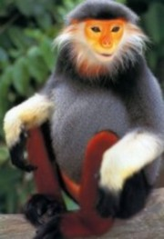

Douc Langur

Douc Langurs are endangered colobine monkeys found only in the evergreen forests of Vietnam, Cambodia, and Laos.
The animals only live in heavily wooded areas. Populations of doucs have been found in monsoon forests as well as rainforests and their forest homes include: semi evergreen, lowland lower montane and upper montane forests types.
There is a tremendous amount of their habitat lost for construction of homes, furniture, and floors. Along with the trees being chopped down, the areas are being flattened in order to make large agricultural areas. This operation is only increasing as more and more people move into the area that was originally inhabited by the langurs.